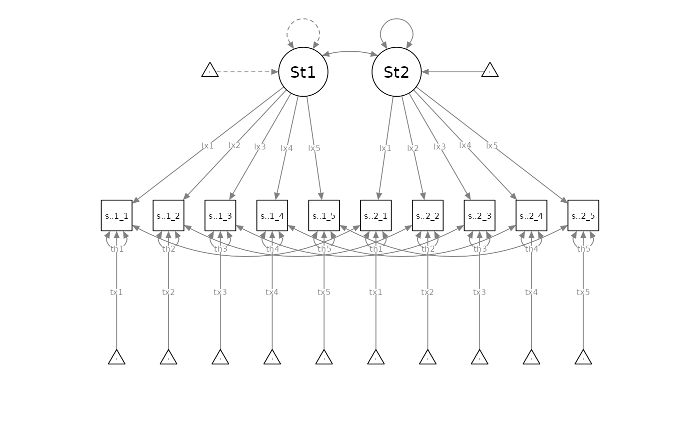

Invariance Testing with Potentially Indistinguishable Dyads: Rationale and Practices for a More Logical and Inclusive Testing Sequence
John K. Sakaluk
10/06/25
Source:vignettes/articles/invariance.Rmd
invariance.RmdThe following resource was made in advance and following the 2023 SPSP Close Relationships Preconference, and is part of a working paper. Please cite the following if you are using these materials:
- Sakaluk, J. K. (preprint). Invariance testing with potentially indistinguishable dyads: Practices and rationale for a more logical and inclusive testing sequence. https://jsakaluk.github.io/dySEM/articles/invariance.html
tl;dr:
The normative invariance-testing ritual, including for dyadic measurement models (Sakaluk et al., 2021), involves first fitting a configurally invariant model (i.e., all measurement model parameters free to vary between partners). A loading-invariant model (i.e., loadings constrained to equivalence between partners) is then fit and compared against the configurally invariant model; an intercept-invariant model (loadings and intercepts constrained to equivalence between partners) is then fit and compared against the loading-invariant model, and so on. The final model is determined as the most constrained model that does not appreciably ruin model fit (e.g., producing a significant nested-model comparison, producing a decrease in some other absolute/relative model fit index beyond a particular threshold, etc.).
This ritual can be consider flawed and/or problematic for at least three reasons:
- The ritual begins with the specification of–and testing against–the least parsimonious dyadic measurement model, as opposed to the most parsimonious.
- The ritual involves the inverting of traditional null-hypothesis significance testing logic (under most circumstances, such that noninvariance is considered undesirable)
- The ritual tacitly promotes a mindset where “distinguishability is the default”, at the expense of indistinguishable dyad types (e.g., same-sex and/or same-gender couples) that have been historically excluded from relationship science
A More Logical and Inclusive Testing Sequence
Measurement-Level vs. Structural-Level Indistinguishability
In structural equation modeling with latent variables, a distinction is typically made between the measurement model and the structural model. The measurement model includes all parameter types that govern the indicator variables (e.g., questionnaire items) and their statistical relationships to the latent variable(s) being modeled. These include:
- item intercepts (contained in the matrix)
- item loadings, and (contained in the matrix)
- item residual variances (contained in the matrix)
Indeed, these parameters are at work in the general-linear-model-like equation for reproducing item responses based on a specified measurement model. Just as in a bivariate regression, a person’s (i) score on an outcome variable (Y) can be produced from an intercept (i.e., expected score on Y when X = 0), slope (i.e., the expected change in Y for every one-unit increase in X), their score on predictor variable X, and leftover residual variance (i.e, the difference between their observed and predicted score on Y)…:
…so too does the reflective latent variable model suggest that a person’s (i) response to a given item (e.g., sat.g.1.1) can be produced from the item intercept (i.e., expected score on sat.g.1.1 when their standing on the latent variable is 0), the item loading (i.e., the expected change in sat.g.1.1 for every one-unit increase in the latent variable), their score the latent variable, and leftover residual variance (i.e, variance in sat.g.1.1 unaccounted for by the latent variable)…
The only other major conceptual distinction from your generic GLM is that this equation plays out for each and every item in the measurement model,
… etc.
The structural model, meanwhile, includes all parameter types that govern statistical properties of the latent variables themselves, and their relationships to one another. These include:
- latent variances (contained in the matrix)
- latent means (contained in the matrix)
- latent covariances/latent correlations (also contained in the matrix), and
- latent slopes (contained in the matrix)
When using the term “indistinguishable” in the context of structural equation modeling with latent variables, we therefore need to be very careful and precise in conveying to what the term “indistinguishable” is meant to apply. Typically, indistinguishability (or exchangeability, or interchangeability)(Griffin & Gonzalez, 1995; Olsen & Kenny, 2006) has been used to refer to dyadic models in which dyad members have been modeled as having the same variance(s) and intrapersonal and interpersonal covariance(s)/correlation(s)(Gonzalez & Griffin, 1999; Kenny et al., 2006). Further, though partners having the same mean(s) is not strictly necessary, it is often a presumed feature of indistinguishability, and models require adjustment when means differ between partners (Kenny et al., 2006).
With the addition of a measurement model (i.e., including loadings, residual (co)variances, and intercepts) in dyadic SEM, however, more nuance in terminology is likely needed in order to avoid confusion that might otherwise occur by describing a model of “indistinguishable” dyads. We therefore propose the following terminology conventions for describing what exact component(s) of a dyadic SEM are “indistinguishable”:
- Dyadic Measurement Invariance (Indistinguishability of Measurement Model Across Partners)
- Dyadic Dispersion Equivalence (Indistinguishability of Latent Variances and/or Standard Deviations)
- Dyadic Association Equivalence (Indistinguishability of Latent Covariances, Correlations, and/or Regression Slopes Across Partners)
- Dyadic Level Equivalence (Indistinguishability of Latent Means Across Partners)
This vocabulary offsets the indistinguishability of the measurement model parameters (i.e., loadings, residual (co)variances, and intercepts) with the term “invariance”, from indistinguishability of structural model parameters (i.e., latent (co)variances, correlations, slopes, and means) with the term “equivalence.” This invariance vs. equivalence could also be carried through to other comparisons across design features, like groups and/or time. Dyads could further be described as fully indistinguishable were all components of indistinguishability established within a given study’s design, and perhaps as psychometrically indistinguishable when measurement model parameters are invariant but some structural model parameters vary, while structurally indistinguishable when some measurement model parameters vary but structural model parameters are equivalent.
Meet Your Dyadic Measurement Invariance Models
A Disclaimer About Marker Variables
Note: the following models use a “fixed-factor” scale-setting approach, whereby the latent variance is fixed to 1 for at least one dyad member (both must be fixed in the configural model), and the latent mean is fixed to 0 for at least one dyad member (both must be fixed in the configural and loading models).
Scale-setting method choice won’t impact model fit and therefore won’t affect model comparisons among invariance models, but the choice does impact parameter estimation and significance testing. Prior methodological research suggests that the “marker variable” method (fixing a factor loading to 1 for each latent variable; the default in most software) can lead you astray in determining which item(s) are specifically responsible for noninvariance (which I cover in the Additional Considerations section), so I strongly recommend you adopt fixed-factor as your default scale-setting approach, especially for invariance testing.
The New Proposed Sequence
Instead of the normative invariance-testing ritual, I propose flipping the sequencing of dyadic invariance testing, such that researchers begin by specifying a measurement-level indistinguishable (i.e., residual-invariant) dyadic measurement model as the initial baseline model, with loadings, intercepts, and residual variances equated between partners:

Researchers would then compare the residual-invariant model against the incrementally less-parsimonious intercept-invariant model (with freely estimated residual variances):

If the residual-invariant model was rejected in favour of the intercept-invariant model, the intercept-invariant model would become the new baseline model. Researchers would then compare it against the incrementally less-parsimonious loading-invariant model (with freely estimated residual variances and intercepts):

If the intercept-invariant model was rejected in favour of the loading-invariant model, the loading-invariant model would become the new baseline model. Researchers would then compare it against the incrementally least-parsimonious configurally invariant model (with freely estimated residual variances, intercepts, and loadings):

If the loading-invariant model was rejected in favour of the configurally invariant model, the configurally invariant model would be the best-supported measurement model. Otherwise, the best supported model would be the baseline model which was the loading invariance model.
Example Data and Scraping Variable Names
library(dySEM)
library(lavaan)
library(semPlot)
dat <- commitmentQ
names(dat)
#> [1] "sat.g.1_1" "sat.g.1_2" "sat.g.1_3" "sat.g.1_4" "sat.g.1_5" "com.1_1"
#> [7] "com.1_2" "com.1_3" "com.1_4" "com.1_5" "sat.g.2_1" "sat.g.2_2"
#> [13] "sat.g.2_3" "sat.g.2_4" "sat.g.2_5" "com.2_1" "com.2_2" "com.2_3"
#> [19] "com.2_4" "com.2_5"The example dataset we are using contains items assessing relationship satisfaction and commitment (five items each, for both partners): we will just focus on the satisfaction items. As with any use of dySEM, we begin by scraping the variables which we are attempting to model. We first need to identify the repetitious “naming pattern” that is applied to the satisfaction items (see (here)[https://jsakaluk.github.io/dySEM/articles/varnames.html] if you need a refresher on these). We see the items correspond to a “Stem” (sat.g), “Partner” (“1” or “2”), “Item number” (1-5) or “spi” ordering, in which “.” is used to separate stem from partner, and “_” is used to separate partner from item number. We assign this to an object (arbitrarily) called “dvn” (as I think of this list as capturing information about (d)yad (v)ariable (n)ames):
dvn <- scrapeVarCross(dat = commitmentQ,
x_order = "spi", x_stem = "sat.g", x_delim1 = ".", x_delim2="_",
distinguish_1="1", distinguish_2="2")
dvn
#> $p1xvarnames
#> [1] "sat.g.1_1" "sat.g.1_2" "sat.g.1_3" "sat.g.1_4" "sat.g.1_5"
#>
#> $p2xvarnames
#> [1] "sat.g.2_1" "sat.g.2_2" "sat.g.2_3" "sat.g.2_4" "sat.g.2_5"
#>
#> $xindper
#> [1] 5
#>
#> $dist1
#> [1] "1"
#>
#> $dist2
#> [1] "2"
#>
#> $indnum
#> [1] 10We can visually confirm that the list contains:
- $p1xvarnames: the five variable names for Partner 1’s satisfaction item responses
- $p2xvarnames: the five variable names for Partner 2’s satisfaction item responses
- $xindper: the number of items for Latent X (in this case, Satisfaction) for each partner
- $dist1: the distinguishing character for the first partner
- $dist2: the distinguishing character for the second partner
- $indnum: the total number of items to be modeled
These pieces of information are all that is needed for dySEM to automate scripting dyadic CFA models with a variety of specification options.
Example Analysis
Model Scripting
dySEM makes the rest of the process of testing dyadic invariance
straightforward. We first need to use dySEM scripter functions to
generate the correct code for lavaan to fit our (1)
residual-invariant, (2) intercept-invariant, (3) loading-invariant, and
(4) configurally invariance dyadic CFA models. Each model requires one
use of scriptCor(), which needs to be provided the dvn list we just
created with scrapeVarCross(), an arbitrary name for the latent variable
being modeled, the type of invariance to impose in the the “model”
argument. Critically, instead of starting with configural dyadic
invariance (and proceeding to more parsimonious/restrictive models), I
recommend starting with the most parsimonious/restrictive model (full
measurement-level indistinguishability), and then testing whether more
complicated models are empirically warranted.
sat.residual.script <- scriptCor(dvn, lvname = "Sat", constr_dy_meas = c("loadings", "intercepts", "residuals"), constr_dy_struct = "none")
sat.intercept.script <- scriptCor(dvn, lvname = "Sat", constr_dy_meas = c("loadings", "intercepts"), constr_dy_struct = "none")
sat.loading.script <- scriptCor(dvn, lvname = "Sat", constr_dy_meas = c("loadings"), constr_dy_struct = "none")
sat.config.script <- scriptCor(dvn, lvname = "Sat", constr_dy_meas = "none", constr_dy_struct = "none")If you return the output of scriptCor(), it doesn’t look particularly nice:
#> [1] "#Measurement Model\n\n#Loadings\nSat1=~NA*sat.g.1_1+lx1*sat.g.1_1+lx2*sat.g.1_2+lx3*sat.g.1_3+lx4*sat.g.1_4+lx5*sat.g.1_5\nSat2=~NA*sat.g.2_1+lx1*sat.g.2_1+lx2*sat.g.2_2+lx3*sat.g.2_3+lx4*sat.g.2_4+lx5*sat.g.2_5\n\n#Intercepts\nsat.g.1_1 ~ tx1*1\nsat.g.1_2 ~ tx2*1\nsat.g.1_3 ~ tx3*1\nsat.g.1_4 ~ tx4*1\nsat.g.1_5 ~ tx5*1\n\nsat.g.2_1 ~ tx1*1\nsat.g.2_2 ~ tx2*1\nsat.g.2_3 ~ tx3*1\nsat.g.2_4 ~ tx4*1\nsat.g.2_5 ~ tx5*1\n\n#Residual Variances\nsat.g.1_1 ~~ thx1*sat.g.1_1\nsat.g.1_2 ~~ thx2*sat.g.1_2\nsat.g.1_3 ~~ thx3*sat.g.1_3\nsat.g.1_4 ~~ thx4*sat.g.1_4\nsat.g.1_5 ~~ thx5*sat.g.1_5\n\nsat.g.2_1 ~~ thx1*sat.g.2_1\nsat.g.2_2 ~~ thx2*sat.g.2_2\nsat.g.2_3 ~~ thx3*sat.g.2_3\nsat.g.2_4 ~~ thx4*sat.g.2_4\nsat.g.2_5 ~~ thx5*sat.g.2_5\n\n#Residual Covariances\nsat.g.1_1 ~~ sat.g.2_1\nsat.g.1_2 ~~ sat.g.2_2\nsat.g.1_3 ~~ sat.g.2_3\nsat.g.1_4 ~~ sat.g.2_4\nsat.g.1_5 ~~ sat.g.2_5\n\n#Structural Model\n\n#Latent (Co)Variances\nSat1 ~~ 1*Sat1\nSat2 ~~ NA*Sat2\nSat1 ~~ Sat2\n\n#Latent Means\nSat1 ~ 0*1\nSat2 ~ NA*1"Rest assured, lavaan can make sense of this applesauce;
all the required text is there, and with a light touch of the
concatenate function (which will parse the line-breaks in the text of
the script), you can see a friendly human-readable version of what
scriptCor() generated:
cat(sat.residual.script)
#> #Measurement Model
#>
#> #Loadings
#> Sat1=~NA*sat.g.1_1+lx1*sat.g.1_1+lx2*sat.g.1_2+lx3*sat.g.1_3+lx4*sat.g.1_4+lx5*sat.g.1_5
#> Sat2=~NA*sat.g.2_1+lx1*sat.g.2_1+lx2*sat.g.2_2+lx3*sat.g.2_3+lx4*sat.g.2_4+lx5*sat.g.2_5
#>
#> #Intercepts
#> sat.g.1_1 ~ tx1*1
#> sat.g.1_2 ~ tx2*1
#> sat.g.1_3 ~ tx3*1
#> sat.g.1_4 ~ tx4*1
#> sat.g.1_5 ~ tx5*1
#>
#> sat.g.2_1 ~ tx1*1
#> sat.g.2_2 ~ tx2*1
#> sat.g.2_3 ~ tx3*1
#> sat.g.2_4 ~ tx4*1
#> sat.g.2_5 ~ tx5*1
#>
#> #Residual Variances
#> sat.g.1_1 ~~ thx1*sat.g.1_1
#> sat.g.1_2 ~~ thx2*sat.g.1_2
#> sat.g.1_3 ~~ thx3*sat.g.1_3
#> sat.g.1_4 ~~ thx4*sat.g.1_4
#> sat.g.1_5 ~~ thx5*sat.g.1_5
#>
#> sat.g.2_1 ~~ thx1*sat.g.2_1
#> sat.g.2_2 ~~ thx2*sat.g.2_2
#> sat.g.2_3 ~~ thx3*sat.g.2_3
#> sat.g.2_4 ~~ thx4*sat.g.2_4
#> sat.g.2_5 ~~ thx5*sat.g.2_5
#>
#> #Residual Covariances
#> sat.g.1_1 ~~ sat.g.2_1
#> sat.g.1_2 ~~ sat.g.2_2
#> sat.g.1_3 ~~ sat.g.2_3
#> sat.g.1_4 ~~ sat.g.2_4
#> sat.g.1_5 ~~ sat.g.2_5
#>
#> #Structural Model
#>
#> #Latent (Co)Variances
#> Sat1 ~~ 1*Sat1
#> Sat2 ~~ NA*Sat2
#> Sat1 ~~ Sat2
#>
#> #Latent Means
#> Sat1 ~ 0*1
#> Sat2 ~ NA*1We can now immediately pass all of these models to
lavaan for fitting.
Model Fitting
sat.residual.fit <- cfa(sat.residual.script,
data = commitmentQ,
std.lv = FALSE, auto.fix.first= FALSE, meanstructure = TRUE)
sat.intercept.fit <- cfa(sat.intercept.script,
data = commitmentQ,
std.lv = FALSE, auto.fix.first= FALSE, meanstructure = TRUE)
sat.loading.fit <- cfa(sat.loading.script,
data = commitmentQ,
std.lv = FALSE, auto.fix.first= FALSE, meanstructure = TRUE)
sat.config.fit <- cfa(sat.config.script,
data = commitmentQ,
std.lv = FALSE, auto.fix.first= FALSE, meanstructure = TRUE)Inspecting Output
And we can expeditiously compare all the models at once:
out <- anova(sat.residual.fit, sat.intercept.fit, sat.loading.fit, sat.config.fit)Unfortunately, the default behavior of anova() is to
compare these models in order of least parsimonious to most. In essence,
this model testing approach defaults to presuming full
distinguishability, and the statistical “onus” is on the researcher to
demonstrate that this is not the case. We have therefore created an
alternative wrapper function for anova(), called
getInvarCompTable() that reverses the order of the model
comparison process, so that indistinguishability in the measurement
model is the base null model, and then the researcher tests against this
model to determine if subsequently relaxed groups of constraints
significantly improves the model. All it requires as input is a list of
all four models, in order:
mods <- list(sat.residual.fit, sat.intercept.fit, sat.loading.fit, sat.config.fit)
outputInvarCompTab(mods)
#> # A tibble: 4 × 15
#> mod chisq df pvalue aic bic rmsea cfi chisq_diff df_diff p_diff
#> <chr> <dbl> <dbl> <dbl> <dbl> <dbl> <dbl> <dbl> <dbl> <dbl> <dbl>
#> 1 configur… 78.8 42 0 3855. 3918. 0.087 0.97 NA NA NA
#> 2 loading 60.3 37 0.009 3847. 3924. 0.074 0.981 -18.5 -5 0.002
#> 3 intercept 58.8 33 0.004 3853. 3941. 0.082 0.979 -1.51 -4 0.825
#> 4 residual 53.0 29 0.004 3855. 3954. 0.085 0.981 -5.78 -4 0.216
#> # ℹ 4 more variables: aic_diff <dbl>, bic_diff <dbl>, rmsea_diff <dbl>,
#> # cfi_diff <dbl>Beyond being more simpatico with the approach of beginning with the most parsimonious dyadic invariance model–and testing against it to support a more complicated one–we think this approach offers a more intuitive framing of what is happening with chisq and df within each model. That is, relaxing constraints (in each subsequent model) reduces misfit, and therefore chisq decreases; relaxing these constraints, meanwhile, increases model complexity by adding parameters to be estimated, and therefore we lose of “spend” a df for each constraint we relax. In this instance, we can see that we significantly improve the model by relaxing the constraints on the residual variances (i.e., adopting the intercept-invariance model), but relaxing the other constraints between dyads (i.e., intercepts and loadings) does not reduce misfit enough for the amount of parsimony we would need to sacrifice.
Additional Considerations
Identifying Items Responsible for Non-invariance and Specifying A “Partial” Invariance Model
Appraising measurement invariance in the fashion that this tutorial has exemplified, can be thought of as akin to a “global” or “omnibus” test of measurement invariance; a significantly worse-fitting model indicates that the measurement model is not invariant. However, this approach does not identify which items are responsible for the non-invariance. In other words, we need some sort of item-level “post hoc” test to identify which item(s) are responsible for non-invariance (this is a problem common to other forms of invariance testing, too, like multi-group CFAs).
In lavaan, the process for carrying out these item-level
noninvariance tests is a bit cumbersome (spoiler: don’t worry, dySEM has
a one-liner that automates all of this for you!). You would first need
to use lavTestScore, and either:
- submit to it your model which resulted in significantly degraded fit (in this case, the model with invariant loadings + intercepts + residual variances), if you adopted the traditional sequence of invariance testing model comparisons (i.e., starting with the least parsimonious first), OR,
- submit to it the first model that was usurped by a significantly better fitting model (also the invariant loadings + intercepts + residual variances model), if you adopted our proposed sequence of invariance testing model comparisons (i.e., starting with the most parsimonious first)
Either approach will have you use the submit the same model to
lavTestScore; the two merely differ in framing the
considerations by which you select the appropriate model for
lavTestScore. lavTestScore will then return a
list of each item-level constraint, and the amount of misfit introduced
by them, the degree(s) of freedom gained by each constraint, and their
p-values indicating whether their respective amount is
significantly different from zero.
lavTestScore(sat.residual.fit)
#> $test
#>
#> total score test:
#>
#> test X2 df p.value
#> 1 score 25.397 15 0.045
#>
#> $uni
#>
#> univariate score tests:
#>
#> lhs op rhs X2 df p.value
#> 1 .p1. == .p6. 0.541 1 0.462
#> 2 .p2. == .p7. 0.534 1 0.465
#> 3 .p3. == .p8. 0.055 1 0.814
#> 4 .p4. == .p9. 1.438 1 0.231
#> 5 .p5. == .p10. 2.201 1 0.138
#> 6 .p11. == .p16. 0.188 1 0.664
#> 7 .p12. == .p17. 0.023 1 0.878
#> 8 .p13. == .p18. 0.606 1 0.436
#> 9 .p14. == .p19. 1.010 1 0.315
#> 10 .p15. == .p20. 0.043 1 0.835
#> 11 .p21. == .p26. 0.031 1 0.860
#> 12 .p22. == .p27. 8.797 1 0.003
#> 13 .p23. == .p28. 0.910 1 0.340
#> 14 .p24. == .p29. 0.614 1 0.433
#> 15 .p25. == .p30. 7.848 1 0.005In this instance, we see only two constraints result in significantly
worse fit (the 12th and the 15th); the problem is, these constraints are
rather cryptically labeled. If we proceeded with the “from scratch”
approach, we’d then need to use the partable function to
generate the list of estimated and constrained parameters, and the
parameter label (or “plabel”) they have been assigned. In
this way, we would have to remember that the 12th and 15th parameter
constraints were significant, to notice that are the residual variances
for the 2nd and 5th items, respectively.
partable(sat.residual.fit)
#> id lhs op rhs user block group free ustart exo label plabel
#> 1 1 Sat1 =~ sat.g.1_1 1 1 1 1 NA 0 lx1 .p1.
#> 2 2 Sat1 =~ sat.g.1_2 1 1 1 2 NA 0 lx2 .p2.
#> 3 3 Sat1 =~ sat.g.1_3 1 1 1 3 NA 0 lx3 .p3.
#> 4 4 Sat1 =~ sat.g.1_4 1 1 1 4 NA 0 lx4 .p4.
#> 5 5 Sat1 =~ sat.g.1_5 1 1 1 5 NA 0 lx5 .p5.
#> 6 6 Sat2 =~ sat.g.2_1 1 1 1 6 NA 0 lx1 .p6.
#> 7 7 Sat2 =~ sat.g.2_2 1 1 1 7 NA 0 lx2 .p7.
#> 8 8 Sat2 =~ sat.g.2_3 1 1 1 8 NA 0 lx3 .p8.
#> 9 9 Sat2 =~ sat.g.2_4 1 1 1 9 NA 0 lx4 .p9.
#> 10 10 Sat2 =~ sat.g.2_5 1 1 1 10 NA 0 lx5 .p10.
#> 11 11 sat.g.1_1 ~1 1 1 1 11 NA 0 tx1 .p11.
#> 12 12 sat.g.1_2 ~1 1 1 1 12 NA 0 tx2 .p12.
#> 13 13 sat.g.1_3 ~1 1 1 1 13 NA 0 tx3 .p13.
#> 14 14 sat.g.1_4 ~1 1 1 1 14 NA 0 tx4 .p14.
#> 15 15 sat.g.1_5 ~1 1 1 1 15 NA 0 tx5 .p15.
#> 16 16 sat.g.2_1 ~1 1 1 1 16 NA 0 tx1 .p16.
#> 17 17 sat.g.2_2 ~1 1 1 1 17 NA 0 tx2 .p17.
#> 18 18 sat.g.2_3 ~1 1 1 1 18 NA 0 tx3 .p18.
#> 19 19 sat.g.2_4 ~1 1 1 1 19 NA 0 tx4 .p19.
#> 20 20 sat.g.2_5 ~1 1 1 1 20 NA 0 tx5 .p20.
#> 21 21 sat.g.1_1 ~~ sat.g.1_1 1 1 1 21 NA 0 thx1 .p21.
#> 22 22 sat.g.1_2 ~~ sat.g.1_2 1 1 1 22 NA 0 thx2 .p22.
#> 23 23 sat.g.1_3 ~~ sat.g.1_3 1 1 1 23 NA 0 thx3 .p23.
#> 24 24 sat.g.1_4 ~~ sat.g.1_4 1 1 1 24 NA 0 thx4 .p24.
#> 25 25 sat.g.1_5 ~~ sat.g.1_5 1 1 1 25 NA 0 thx5 .p25.
#> 26 26 sat.g.2_1 ~~ sat.g.2_1 1 1 1 26 NA 0 thx1 .p26.
#> 27 27 sat.g.2_2 ~~ sat.g.2_2 1 1 1 27 NA 0 thx2 .p27.
#> 28 28 sat.g.2_3 ~~ sat.g.2_3 1 1 1 28 NA 0 thx3 .p28.
#> 29 29 sat.g.2_4 ~~ sat.g.2_4 1 1 1 29 NA 0 thx4 .p29.
#> 30 30 sat.g.2_5 ~~ sat.g.2_5 1 1 1 30 NA 0 thx5 .p30.
#> 31 31 sat.g.1_1 ~~ sat.g.2_1 1 1 1 31 NA 0 .p31.
#> 32 32 sat.g.1_2 ~~ sat.g.2_2 1 1 1 32 NA 0 .p32.
#> 33 33 sat.g.1_3 ~~ sat.g.2_3 1 1 1 33 NA 0 .p33.
#> 34 34 sat.g.1_4 ~~ sat.g.2_4 1 1 1 34 NA 0 .p34.
#> 35 35 sat.g.1_5 ~~ sat.g.2_5 1 1 1 35 NA 0 .p35.
#> 36 36 Sat1 ~~ Sat1 1 1 1 0 1 0 .p36.
#> 37 37 Sat2 ~~ Sat2 1 1 1 36 NA 0 .p37.
#> 38 38 Sat1 ~~ Sat2 1 1 1 37 NA 0 .p38.
#> 39 39 Sat1 ~1 1 1 1 0 0 0 .p39.
#> 40 40 Sat2 ~1 1 1 1 38 NA 0 .p40.
#> 41 41 .p1. == .p6. 2 0 0 0 NA 0
#> 42 42 .p2. == .p7. 2 0 0 0 NA 0
#> 43 43 .p3. == .p8. 2 0 0 0 NA 0
#> 44 44 .p4. == .p9. 2 0 0 0 NA 0
#> 45 45 .p5. == .p10. 2 0 0 0 NA 0
#> 46 46 .p11. == .p16. 2 0 0 0 NA 0
#> 47 47 .p12. == .p17. 2 0 0 0 NA 0
#> 48 48 .p13. == .p18. 2 0 0 0 NA 0
#> 49 49 .p14. == .p19. 2 0 0 0 NA 0
#> 50 50 .p15. == .p20. 2 0 0 0 NA 0
#> 51 51 .p21. == .p26. 2 0 0 0 NA 0
#> 52 52 .p22. == .p27. 2 0 0 0 NA 0
#> 53 53 .p23. == .p28. 2 0 0 0 NA 0
#> 54 54 .p24. == .p29. 2 0 0 0 NA 0
#> 55 55 .p25. == .p30. 2 0 0 0 NA 0
#> start est se
#> 1 2.097 2.059 0.147
#> 2 1.858 1.957 0.154
#> 3 2.068 2.077 0.149
#> 4 1.982 1.879 0.149
#> 5 1.878 1.985 0.162
#> 6 1.000 2.059 0.147
#> 7 1.026 1.957 0.154
#> 8 1.004 2.077 0.149
#> 9 0.890 1.879 0.149
#> 10 1.028 1.985 0.162
#> 11 6.600 6.576 0.199
#> 12 6.548 6.555 0.200
#> 13 6.409 6.366 0.202
#> 14 6.661 6.723 0.193
#> 15 6.426 6.440 0.207
#> 16 6.930 6.576 0.199
#> 17 6.922 6.555 0.200
#> 18 6.704 6.366 0.202
#> 19 7.130 6.723 0.193
#> 20 6.817 6.440 0.207
#> 21 2.503 0.675 0.088
#> 22 2.472 1.055 0.120
#> 23 2.547 0.707 0.091
#> 24 2.442 1.181 0.126
#> 25 2.661 1.455 0.155
#> 26 2.041 0.675 0.088
#> 27 2.097 1.055 0.120
#> 28 2.078 0.707 0.091
#> 29 1.918 1.181 0.126
#> 30 2.353 1.455 0.155
#> 31 0.000 -0.212 0.087
#> 32 0.000 0.334 0.119
#> 33 0.000 -0.193 0.089
#> 34 0.000 0.123 0.125
#> 35 0.000 0.299 0.154
#> 36 1.000 1.000 0.000
#> 37 0.050 0.827 0.107
#> 38 0.000 0.718 0.059
#> 39 0.000 0.000 0.000
#> 40 0.000 0.184 0.066
#> 41 0.000 0.000 0.000
#> 42 0.000 0.000 0.000
#> 43 0.000 0.000 0.000
#> 44 0.000 0.000 0.000
#> 45 0.000 0.000 0.000
#> 46 0.000 0.000 0.000
#> 47 0.000 0.000 0.000
#> 48 0.000 0.000 0.000
#> 49 0.000 0.000 0.000
#> 50 0.000 0.000 0.000
#> 51 0.000 0.000 0.000
#> 52 0.000 0.000 0.000
#> 53 0.000 0.000 0.000
#> 54 0.000 0.000 0.000
#> 55 0.000 0.000 0.000We built a wrapper-function, outputConstraintTab, that
automates this process for you. It takes as its argument the model that
resulted in significantly degraded fit, and returns a list of the items
that were responsible for the non-invariance, with the matching of
plabel having taken place “behind the scenes”, so that all you are
provided is a more immediately readable and intuitive list of
constraints:
outputConstraintTab(sat.residual.fit)
#> # A tibble: 15 × 7
#> param1 constraint param2 chi2 df pvalue sig
#> <chr> <chr> <chr> <dbl> <dbl> <dbl> <chr>
#> 1 "Sat1 =~ sat.g.1_1" == "Sat2 =~ sat.g.… 0.541 1 0.462 NA
#> 2 "Sat1 =~ sat.g.1_2" == "Sat2 =~ sat.g.… 0.534 1 0.465 NA
#> 3 "Sat1 =~ sat.g.1_3" == "Sat2 =~ sat.g.… 0.055 1 0.814 NA
#> 4 "Sat1 =~ sat.g.1_4" == "Sat2 =~ sat.g.… 1.44 1 0.231 NA
#> 5 "Sat1 =~ sat.g.1_5" == "Sat2 =~ sat.g.… 2.20 1 0.138 NA
#> 6 "sat.g.1_1 ~1 " == "sat.g.2_1 ~1 " 0.188 1 0.664 NA
#> 7 "sat.g.1_2 ~1 " == "sat.g.2_2 ~1 " 0.023 1 0.878 NA
#> 8 "sat.g.1_3 ~1 " == "sat.g.2_3 ~1 " 0.606 1 0.436 NA
#> 9 "sat.g.1_4 ~1 " == "sat.g.2_4 ~1 " 1.01 1 0.315 NA
#> 10 "sat.g.1_5 ~1 " == "sat.g.2_5 ~1 " 0.043 1 0.835 NA
#> 11 "sat.g.1_1 ~~ sat.g.1_1" == "sat.g.2_1 ~~ s… 0.031 1 0.86 NA
#> 12 "sat.g.1_2 ~~ sat.g.1_2" == "sat.g.2_2 ~~ s… 8.80 1 0.003 **
#> 13 "sat.g.1_3 ~~ sat.g.1_3" == "sat.g.2_3 ~~ s… 0.91 1 0.34 NA
#> 14 "sat.g.1_4 ~~ sat.g.1_4" == "sat.g.2_4 ~~ s… 0.614 1 0.433 NA
#> 15 "sat.g.1_5 ~~ sat.g.1_5" == "sat.g.2_5 ~~ s… 7.85 1 0.005 **In this output, we quickly see that none of the individual equality
constraints on the loadings (=~ operator) or intercepts
(~1 operator) significantly degraded model fit, but two of
the residual variance constraints (~~ operator) did (for
the 2nd and 5th items).
Calculating and Considering the Magnitude of Difference in Measurement Model Parameter Estimates
Finally, when noninvariance is present, it’s often informative to quantify the magnitude of it. Although not often reported, there are a variety of effect size measures for noninvariance (see Nye and Drasgow, 2011; Gunn et al., 2020), one of which () we have adapted for the dyadic invariance case (in Sakaluk et al., 2021).
gives you the standardized average difference in a given indicator score between the two members of the dyad, across a normal latent variable distribution for the second partner assuming the differences were uniform (Gunn et al., 2020). Put another way, you can think of as providing you a standardized sense of how misleading noninvariance in a given item would be, in terms of either creating the illusion of a group difference on an item, or suppressing the presence of a group difference on an item. That is, it is “Cohen’s d”-like in its computation, but recognize that given the very context of measurement modeling (e.g., vs. a t-test), users should not expect the same interpretative thresholds as Cohen’s d to hold (Nye et al., 2019).
To calculate
for your items, you must first determine a viable “partially invariant”
model (Nye & Drasgow, 2011; Gunn et al, 2020): that is, a model that
is invariant on all parameters except for those that were identified as
significantly noninvariant in the previous step using
getConstraintTests(). In this case, we would need to
specify a model that is invariant on all parameters except for the
residual variances for the 2nd and 5th items.
sat.partial.script <-'
#Measurement Model
#Loadings
Sat1=~NA*sat.g.1_1+lx1*sat.g.1_1+lx2*sat.g.1_2+lx3*sat.g.1_3+lx4*sat.g.1_4+lx5*sat.g.1_5
Sat2=~NA*sat.g.2_1+lx1*sat.g.2_1+lx2*sat.g.2_2+lx3*sat.g.2_3+lx4*sat.g.2_4+lx5*sat.g.2_5
#Intercepts
sat.g.1_1 ~ tx1*1
sat.g.1_2 ~ tx2*1
sat.g.1_3 ~ tx3*1
sat.g.1_4 ~ tx4*1
sat.g.1_5 ~ tx5*1
sat.g.2_1 ~ tx1*1
sat.g.2_2 ~ tx2*1
sat.g.2_3 ~ tx3*1
sat.g.2_4 ~ tx4*1
sat.g.2_5 ~ tx5*1
#Residual Variances (free to noninvariant residuals)
sat.g.1_1 ~~ thx1*sat.g.1_1
sat.g.1_2 ~~ sat.g.1_2
sat.g.1_3 ~~ thx3*sat.g.1_3
sat.g.1_4 ~~ thx4*sat.g.1_4
sat.g.1_5 ~~ sat.g.1_5
sat.g.2_1 ~~ thx1*sat.g.2_1
sat.g.2_2 ~~ sat.g.2_2
sat.g.2_3 ~~ thx3*sat.g.2_3
sat.g.2_4 ~~ thx4*sat.g.2_4
sat.g.2_5 ~~ sat.g.2_5
#Residual Covariances
sat.g.1_1 ~~ sat.g.2_1
sat.g.1_2 ~~ sat.g.2_2
sat.g.1_3 ~~ sat.g.2_3
sat.g.1_4 ~~ sat.g.2_4
sat.g.1_5 ~~ sat.g.2_5
#Structural Model
#Latent (Co)Variances
Sat1 ~~ 1*Sat1
Sat2 ~~ NA*Sat2
Sat1 ~~ Sat2
#Latent Means
Sat1 ~ 0*1
Sat2 ~ NA*1
'
#Fit partial model
sat.partial.fit <- cfa(sat.partial.script,
data = commitmentQ,
std.lv = FALSE, auto.fix.first= FALSE, meanstructure = TRUE)We can then pass our data frame, dvn, and partially invariant model
to the getDydmacs function, which will return a list of the
values for each item.
getDydmacs(dat, dvn, sat.partial.fit)
#> dMACS
#> [1,] 0
#> [2,] 0
#> [3,] 0
#> [4,] 0
#> [5,] 0In this case, our values are all 0; this is because the measure is only sensitive to noninvariance in loadings and intercepts (which are the primary measurement models of interest in most invariance testing), and so the residual noninvariance in the 2nd and 5th items does not contribute to the values.
Note, however, how much noninvariance “matters” in a given case will vary across contexts. Nye et al. (2019), for example, note that in a measurement model of a small number of indicators, one large noninvariant item, or consistent small levels of noninvariance across items, can be quite misleading. In a larger battery of items, meanwhile, one or two substantially noninvariant items may have their distorting influences ‘washed out’ by the other invariant items.